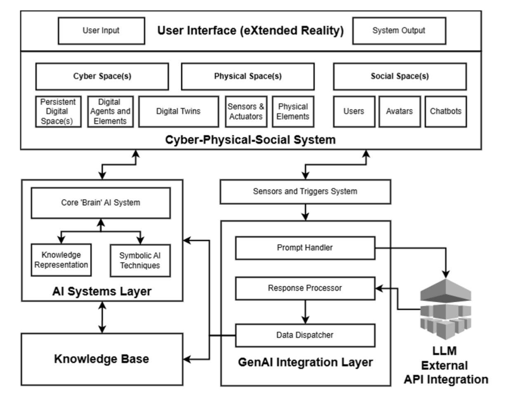
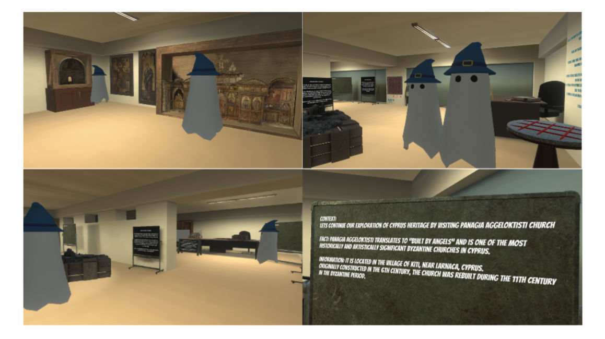

First research paper :: Taming Chat RTX
Full research paper that summarizes our integration of Chat RTX with Unity, the architectural decisions, and evaluation of LLMs for a CPSS-driven virtual museum.
Download PDFGithub Representation
LinkIntro
My research project was part of a larger university initiative — creating an intelligent museum system in the Metaverse for the preservation and promotion of cultural heritage. To put it simply, we were trying to build a virtual museum where visitors wouldn’t just look at exhibits, but could actually talk to them — literally — through smart AI assistants.
At the core of it was the Cyber-Physical-Social Systems (CPSS) architecture — systems that combine the physical world, the digital environment, and social interactions
We wanted the museum to respond to visitors: to know where they were, which exhibits they had already seen, and to hold a coherent, context-aware conversation, like a really good tour guide. For this, we tested various Large Language Models — GPT-4, Mistral, and others — and evaluated them on four key criteria: factual accuracy, contextual relevance, safety (no culturally insensitive outputs), and “human-likeness” in communication.
My Road
In essence, our mission was to connect cutting-edge AI models with an immersive Metaverse, making it safe, engaging, and genuinely useful for educational purposes. And, as always happens in real projects, I had to invent a bunch of workarounds and dig deep into architecture — which quickly became my main playground for experiments.
After my second year at university, like many students, I started looking for something to do over the summer to gain experience. I sent out my CV (which, looking back, only had “I know HTML/CSS/JS” — funny now, but back then it felt solid) and talked to lecturers until I got to know my course leader, Louis Nisiotis, more closely. He offered me a project researching Nvidia Chat RTX and exploring how to integrate it with Unity. I had never worked with such infrastructure before, didn’t know Postman or even how to make a curl request — but my enthusiasm was through the roof.
The start was rough — the learning curve felt like a broken, unoptimized gradient descent. My AI knowledge was basically just “I’ve opened ChatGPT before.” Still, I dove into the code, tried writing an API, hacked together workarounds like saving outputs to .txt files and loading them into Unity scenes, and also experimented with Ollama. Ollama impressed me, but its closed architecture made storing chat history impossible — a dealbreaker for our goals.
I used Ollama locally for quick LLM experiments. While inference quality and latency were solid, the closed chat-store flow made it difficult to persist conversational history reliably for our museum use case.

After a month of headaches, I stumbled upon a script that let me capture Chat RTX responses and do whatever I wanted with them. A few tweaks later, I had my first MVP. The only problem? It felt like bringing a tank to a Formula 1 race — powerful, but way overkill.
We wanted to store message histories and make the system global — even considered running a Python script on AWS EC2 — but eventually decided to keep it all within the university’s local network. Along the way, I fell in love with Go, experimented with protocol buffers and gRPC, which didn’t speed up the project but massively expanded my understanding of architecture.
By November 2024, it was clear we needed a new approach. That’s when I discovered LangChain — and with it, HuggingFace, LlamaIndex, gave me a broad understanding. My prior Ollama experience helped me build my first Python pipeline with a custom prompt template — just a few lines of API integration, but at the time it felt like rocket science.
LangChain provided the orchestration layer for prompts, tools, and memory, letting me wire together model calls and retrieval in a cleaner way than my initial ad-hoc scripts.
The last puzzle piece was: where do we store chat history? Redis was out due to virtualization issues, text files were obviously a no-go. That’s when I found Upstash, which allowed remote RAG-based storage of all session and user data. This became the breakthrough that wrapped up the project — which ran from summer 2024 to January 2025 — giving me not just results, but a deep understanding of AI integrations, tools, and architectural design.
By “virtualization issues” I refer to the constraints of our university’s VM/host setup (networking and persistence limitations) that made running and maintaining a stateful Redis instance impractical for the project scope.
Self-hosted Redis was hard to operate in our environment, while Upstash offered a managed, serverless Redis-compatible store accessible over HTTPS — perfect for persisting chat sessions and RAG metadata without infra overhead.